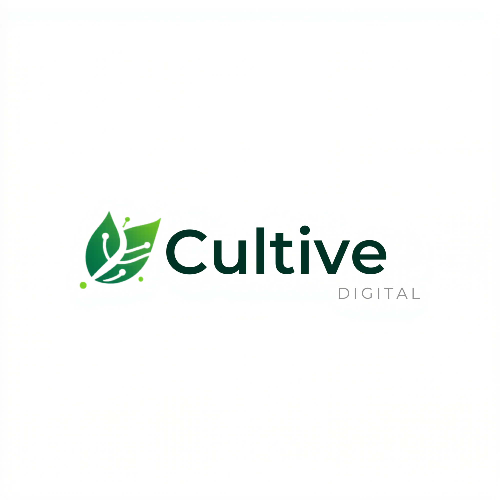

A Cultive Digital nasceu da necessidade real de organizar, automatizar e escalar atendimentos e negócios de forma simples, eficiente e sustentável.
Conhecer soluções
A Cultive Digital surgiu a partir da vivência prática da médica Bruna Pereira, que enfrentava desafios reais na organização de atendimentos, acompanhamento de pacientes e gestão de contatos.
A falta de sistemas simples e eficientes gerava perda de oportunidades, retrabalho e dificuldade em manter consistência no acompanhamento.
A solução desenvolvida inicialmente para a área da saúde rapidamente se mostrou aplicável a outros negócios que enfrentam o mesmo problema: falta de organização e ausência de processos automatizados.
O que começou como uma necessidade individual evoluiu para uma solução estruturada capaz de aumentar eficiência, melhorar relacionamento com clientes e ampliar resultados em diferentes segmentos.
Hoje, a Cultive Digital atua criando sistemas simples, funcionais e estratégicos para empresas que desejam crescer com consistência.
Desenvolvimento de sites estratégicos, com foco em posicionamento, clareza de comunicação e geração de oportunidades.
Estrutura pensada para transformar visitantes em contatos qualificados.
Sistema simples de gestão de contatos e acompanhamento de clientes.
Permite organizar leads, registrar interações e garantir que nenhum cliente potencial seja perdido por falta de acompanhamento.
Estruturação de fluxos automáticos de contato e follow-up.
A comunicação deixa de depender de ações manuais e passa a acontecer de forma contínua e previsível.